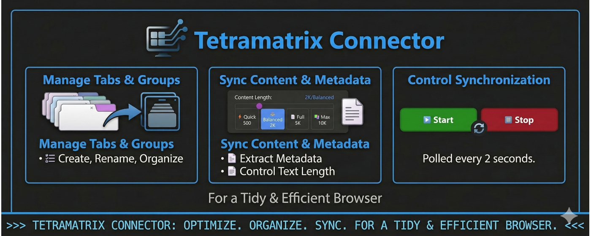
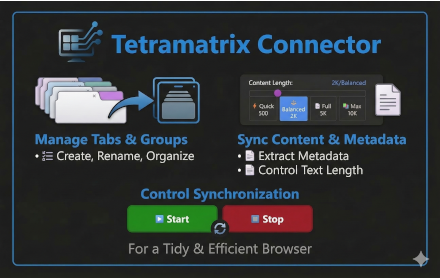
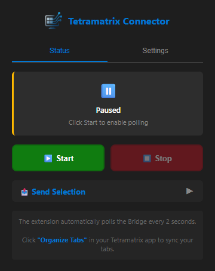
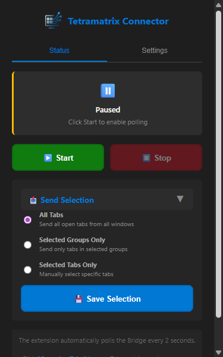
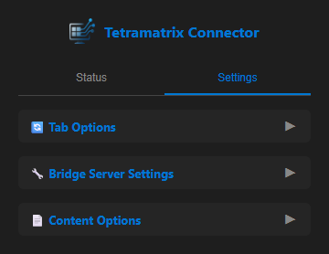
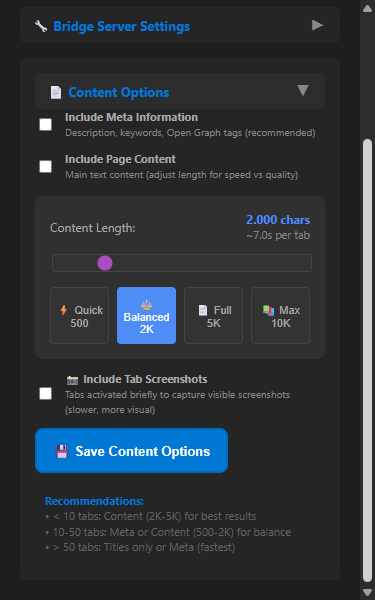
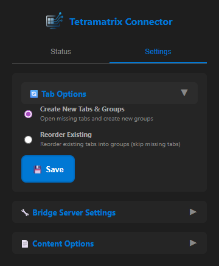

TabNeuron Connector
Chrome Extension Support
Overview
TabNeuron Connector is a lightweight Chrome extension that serves as a bridge between your browser and the TabNeuron desktop application. It enables bidirectional communication via localhost, allowing your browser tabs to sync with an infinite 2D spatial canvas workspace.
Key Benefits:
- 🔄 Bidirectional Sync: Changes in Chrome reflect on the canvas and vice versa
- 📸 Tab Previews: Automatic screenshots and metadata extraction
- 🧠 AI-Powered: Enables AI analysis of tab content across multiple pages
- 🔒 Local-First: All data stays on your device, no external servers
- ⚡ Lightweight: Minimal resource usage with 2-second polling interval
How It Works
The TabNeuron Connector extension reads tab URLs, titles, and page content from your Chrome browser and forwards them to the TabNeuron desktop application running locally on your machine via localhost:5555.
Why This Extension is Needed:
Chrome extensions are the only way to access browser tab data programmatically. TabNeuron uses this bridge to:
- Extract Tab Metadata: Titles, URLs, favicons, and Open Graph tags
- Capture Visual Previews: Automatic screenshots for spatial organization
- Read Page Content: Main content extraction (500-10000 characters, ads stripped)
- Sync Tab Groups: Bidirectional sync with Chrome's native tab groups
All data processing happens locally. The extension does not collect, store, or transmit any data to external servers.
Screenshots
Promotional Tiles


Extension Interface





Installation
Install from Chrome Web Store
The TabNeuron Connector extension is available in the Chrome Web Store for one-click installation:
Installation Steps:
- Click the "Install from Chrome Web Store" button above
- On the Chrome Web Store page, click "Add to Chrome"
- Confirm by clicking "Add extension" when prompted
- Once installed, the extension icon will appear in your Chrome toolbar
- Click the extension icon to configure the connection to TabNeuron
✓ Installation Complete! The extension icon should now appear in your Chrome toolbar. Click it to configure the connection to TabNeuron.
Configuration
Connection Settings
After installation, configure the extension to connect to TabNeuron:
- Click the TabNeuron Connector icon in Chrome's toolbar
- In the popup, navigate to Settings
- Set Host to:
localhost - Set Port to:
5555 - Leave Polling Interval at default (2 seconds)
- Click "▶️ Start" to begin synchronization
Content Extraction Options
- Content Length: Choose between 500-10000 characters per page
- Strip Ads: Automatically remove advertising content
- Extract Metadata: Enable Open Graph tags and descriptions
Tab Sync Options
- Sync Tab Groups: Mirror Chrome's native tab groups
- Auto-Sync: Automatically detect and sync new tabs
- Screenshots: Enable/disable automatic tab screenshots
💡 Tip: Launch the TabNeuron desktop application before clicking "Start" in the extension. The status indicator will turn green when connected successfully.
Permissions
The TabNeuron Connector requests the following permissions, all used solely for local communication with the desktop application:
| Permission | Purpose |
|---|---|
tabs |
Read tab URLs, titles, and favicons for display on the canvas |
tabGroups |
Sync with Chrome's native tab groups for bidirectional organization |
scripting |
Inject content extraction scripts to read page metadata and main content |
storage |
Store connection settings (host, port, polling interval) locally |
activeTab |
Access the currently active tab for quick operations and screenshots |
No permissions are used to collect, log, or transmit data to external servers or third parties.
Privacy & Data Handling
TabNeuron Connector is designed with privacy-first principles:
- 🔒 No External Servers: All data stays on your local machine
- 🏠 Localhost Only: Communication happens exclusively via
localhost:5555 - 📵 No Telemetry: No analytics, tracking, or usage data collection
- 💾 Local Storage: Settings stored in Chrome's local storage only
- 🔐 No Remote Logging: Tab data is never logged or stored remotely
For detailed information, see our Privacy Policy.
Support & Resources
Need help or have questions about TabNeuron Connector?
Report Issues
Found a bug or have a feature request? Please report it on our GitHub repository or join the discussion on Discord.
📧 Contact: For direct support, join our Discord server for real-time assistance from the development team.
Get Started with TabNeuron
Download the TabNeuron desktop application and start organizing your browser tabs with AI.